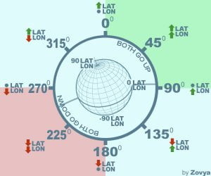

Very useful chart, for those who go hunting on planets, this is a good little reference for traversing Lat/Long on planets.
Cmdr Duke Maximilien Robespierre points out in the Reddit source post linked below:
If your heading is 0 degrees, you will increase the latitude reading but longitude will stay the same. If the heading is 90 degrees, the latitude reading will not change but longitude will increase.
So, say you want to reach lat: 150, long: 50, and you’re at 150, 55. You just keep heading at 270 degrees (because longitude decreases) until you reach 150, 50. Did that make sense?

Source: Reddit post – User Zovya